<title>Data-Driven Holiday</title>

<!-- WITHOUT THIS EVERY MOBILE RULE IN THE FILE IS DEAD, and that is not an
     overstatement: a phone with no viewport meta lays the page out against a
     ~980 px virtual viewport and then scales the result down. `max-width:
     42rem` is 672 px, so it never matches on any phone, and neither does any
     other breakpoint here.

     What was silently not happening on a phone:
       - FIG 09's four panels stayed a 2x2 grid instead of stacking one per row
       - all 7 <picture> sources kept serving the WIDE crop, so the phone
         downloaded the large plate and shrank it -- the -mobile crops that
         exist for exactly this were never selected
       - the live plates kept their 5:3 / 5:4 desktop boxes instead of 4:5 / 1:1
       - the three responsive table layouts never applied
       - FIG 12's own max-width:480px type bump never fired, because the iframe
         was being handed a desktop-width box by its parent

     The page had no <meta> of any kind. It needs no charset: the file is pure
     ASCII (every symbol is an HTML entity), which was verified rather than
     assumed. -->
<meta name="viewport" content="width=device-width, initial-scale=1">

<link rel="icon" href="assets/favicon-tight.ico" type="image/x-icon">
<link rel="icon" type="image/png" sizes="32x32" href="assets/favicon-tight-32x32.png">
<link rel="icon" type="image/png" sizes="16x16" href="assets/favicon-tight-16x16.png">
<link rel="apple-touch-icon" sizes="180x180" href="assets/favicon-tight-180x180.png">

<link rel="preconnect" href="https://fonts.googleapis.com">
<link rel="preconnect" href="https://fonts.gstatic.com" crossorigin>
<link rel="stylesheet" href="https://fonts.googleapis.com/css2?family=Noto+Sans:ital,wght@0,400;0,500;0,600;0,700;1,400&family=Source+Code+Pro:wght@400;500;600&display=swap">

<style>
/* ============================================================================
   DATA-DRIVEN HOLIDAY &mdash; the story page
   ----------------------------------------------------------------------------
   Same design system as the Walkshed Style Kit. Everything visual is driven by
   the :root tokens below &mdash; edit a token and the whole page retunes, maps and
   charts included. Every figure is now a real, generated plate: static crops
   under static/maps and static/graphs, live plates by iframe. The placeholder
   scaffolding this file was drafted with is gone, and so are its styles.
   ============================================================================ */

:root {
  /* ---- CORE PALETTE (light) --------------------------------------------- */
  --paper:      #FAF8F3;   --paper-2:    #F1ECE1;
  --ink:        #201913;   --ink-soft:   #6B5F52;   --line: #E4DCCF;
  --scenic:     #4C6B3F;   /* scenic score / canopy  (leaf, still green)     */
  --heritage:   #B5722A;   /* heritage score         (amber, mid-turn)       */
  --noise:      #9E3B24;   /* penalty: asphalt, noise (rust)                  */
  --link:       var(--heritage);

  /* ---- INTRO BANNER (theme-aware; light = warm sand, dark = deep plate) -- */
  --banner-bg:     #E9DFCB;   /* light: a warm sand panel, not a dark block  */
  --banner-fg:     #201913;   /* light: ink text                             */
  --banner-mut:    #6B5F52;   /* light: muted labels                         */
  --banner-accent: #A25E1B;   /* burnt amber, reserved for the budget + rings*/

  /* ---- MAP LAYER PALETTE ------------------------------------------------- */
  --map-canopy: #4C6B3F;  --map-green: #8A9A6B;  --map-conservation: #D9A85A;
  --map-listed: #8A5A22;  --map-road: #5A5148;   --map-parking: #9A907F;
  --map-noise:  #9E3B24;  --map-water: #6E8AA0;  --map-ring: var(--ink);
  --layer-a: 0.45;

  /* ---- TYPE ------------------------------------------------------------- */
  --font-sans: "Noto Sans", ui-sans-serif, system-ui, -apple-system, "Segoe UI", Roboto, sans-serif;
  --font-mono: "Source Code Pro", ui-monospace, "SFMono-Regular", monospace;
  --step-hero: clamp(2.5rem, 7vw, 4.5rem);
  --step-h2:   clamp(1.5rem, 3.4vw, 2.1rem);
  --step-lead: clamp(1.2rem, 2.4vw, 1.5rem);
  --step-body: 1.15rem;
  --step-small:0.92rem;
  --step-mono: 0.8rem;

  /* ---- SPACE / SHAPE ---------------------------------------------------- */
  --measure: 40rem;   --wide: 62rem;
  --s1: 0.5rem; --s2: 0.85rem; --s3: 1.25rem; --s4: 2rem; --s5: 3.5rem; --s6: 5rem;
  --para: 1.4rem;     /* gap between paragraphs &mdash; bump for scannability      */
  --hair: 1px; --rule: 2px; --radius: 2px;
  --shadow: 0 1px 2px rgba(32,25,19,.05);
  --shadow-float: 0 2px 10px rgba(32,25,19,.10);
}

@media (prefers-color-scheme: dark) {
  :root:not([data-theme="light"]) {
    --paper: #17120D; --paper-2: #201A13;
    --ink: #EEE7DA; --ink-soft: #A99B88; --line: #33291E;
    --scenic: #8FB06A; --heritage: #E0A64A; --noise: #D8735A;
    --banner-bg: #2B211A; --banner-fg: #FAF6EE; --banner-mut: #CDBFAE; --banner-accent: #E0A64A;
    --map-canopy: #8FB06A; --map-green: #798B5A; --map-conservation: #D9A85A;
    --map-listed: #C79350; --map-road: #6A6053; --map-parking: #4A4236;
    --map-noise: #D8735A; --map-water: #6E8AA0; --layer-a: 0.5;
    --shadow: 0 1px 2px rgba(0,0,0,.35); --shadow-float: 0 3px 14px rgba(0,0,0,.5);
  }
}
:root[data-theme="dark"] {
  --paper: #17120D; --paper-2: #201A13;
  --ink: #EEE7DA; --ink-soft: #A99B88; --line: #33291E;
  --scenic: #8FB06A; --heritage: #E0A64A; --noise: #D8735A;
  --banner-bg: #2B211A; --banner-fg: #FAF6EE; --banner-mut: #CDBFAE; --banner-accent: #E0A64A;
  --map-canopy: #8FB06A; --map-green: #798B5A; --map-conservation: #D9A85A;
  --map-listed: #C79350; --map-road: #6A6053; --map-parking: #4A4236;
  --map-noise: #D8735A; --map-water: #6E8AA0; --layer-a: 0.5;
  --shadow: 0 1px 2px rgba(0,0,0,.35); --shadow-float: 0 3px 14px rgba(0,0,0,.5);
}

/* ============================================================================
   BASE + LAYOUT
   ============================================================================ */
* { box-sizing: border-box; }
html { -webkit-text-size-adjust: 100%; }
body {
  margin: 0; font-family: var(--font-sans); font-size: var(--step-body);
  line-height: 1.6; color: var(--ink); background-color: var(--paper);
  -webkit-font-smoothing: antialiased;
}
.canvas {
  display: grid;
  grid-template-columns: 1fr min(var(--measure), calc(100% - 2rem)) 1fr;
  row-gap: var(--s5); padding-block: var(--s5);
}
.canvas > * { grid-column: 2; }
.canvas > .wide {
  grid-column: 1 / -1; width: min(var(--wide), calc(100% - 2rem)); margin-inline: auto;
}

/* ============================================================================
   TYPE
   ============================================================================ */
h1, h2, h3 { font-family: var(--font-sans); font-weight: 600; line-height: 1.14;
  letter-spacing: -0.02em; text-wrap: balance; margin: 0; }
p { margin: 0; }
.prose { max-width: var(--measure); }
.prose > * + * { margin-top: var(--para); }
.prose h2 { font-size: var(--step-h2); margin-top: var(--s2); }
a { color: var(--link); text-underline-offset: 4px; text-decoration-thickness: 1px; }
a:hover { color: var(--ink-soft); }
strong { font-weight: 600; }
.label { font-family: var(--font-mono); font-size: var(--step-mono); font-weight: 500;
  letter-spacing: 0.12em; text-transform: uppercase; color: var(--ink-soft); }
.mono { font-family: var(--font-mono); font-variant-numeric: tabular-nums; }
.closer { font-family: var(--font-sans); font-weight: 400; font-style: italic;
  font-size: var(--step-lead); color: var(--ink); }

/* ============================================================================
   HERO / MASTHEAD
   ============================================================================ */
.hero { display: grid; gap: var(--s3); padding-top: var(--s2); }
.hero .kicker { display: inline-flex; align-items: center; gap: .6rem; }
.hero h1 { font-size: var(--step-hero); font-weight: 700; letter-spacing: -0.035em;
  line-height: 1.02; }
.hero .subtitle { font-family: var(--font-sans); font-weight: 600; letter-spacing: -0.02em;
  font-size: var(--step-h2); color: var(--ink); margin-top: calc(-1 * var(--s1)); }
.hero .subtitle em { font-style: normal; box-shadow: inset 0 -0.12em 0 var(--heritage); }
.hero .dek { font-size: var(--step-lead); font-weight: 400; letter-spacing: -0.01em;
  color: var(--ink-soft); max-width: 36rem; line-height: 1.4; }
.byline { font-size: var(--step-small); color: var(--ink-soft);
  border-top: var(--hair) solid var(--line); padding-top: var(--s2); margin-top: var(--s1); }

/* ---- theme toggle -------------------------------------------------------- */
.toggle { position: fixed; top: var(--s2); right: var(--s2); z-index: 10;
  font-family: var(--font-mono); font-size: var(--step-mono); font-weight: 500;
  letter-spacing: .06em; color: var(--ink);
  background: var(--paper-2); border: var(--hair) solid var(--line);
  border-radius: var(--radius); padding: .5rem .8rem; cursor: pointer; }
.toggle:hover { border-color: var(--ink-soft); }

/* ============================================================================
   INTRO BANNER (real component, theme-aware palette)
   ============================================================================ */
.banner { background: var(--banner-bg); color: var(--banner-fg);
  border: var(--hair) solid var(--line); border-radius: var(--radius);
  padding: clamp(1.6rem, 5vw, 3rem); box-shadow: var(--shadow);
  display: grid; gap: var(--s3); position: relative; overflow: hidden; }
.banner .rings { position: absolute; right: -3.5rem; top: -3.5rem; opacity: .5; }
.banner .kicker { color: var(--banner-mut); position: relative; }
.banner .facts { display: flex; flex-wrap: wrap; gap: var(--s4) var(--s5); position: relative; }
.banner .fact .label { color: var(--banner-mut); }
.banner .fact b { display: block; font-family: var(--font-sans); font-weight: 700;
  letter-spacing: -0.02em; font-size: clamp(2rem, 7vw, 3.1rem); line-height: 1; margin-top: .45rem; }
.banner .fact .unit { font-size: .42em; font-weight: 500; color: var(--banner-mut); }
/* colour used for hierarchy: only the budget &mdash; the constraint &mdash; is amber */
.banner .fact.key b { color: var(--banner-accent); }

/* ============================================================================
   FIGURE PLATES
   ============================================================================ */
figure.plate { margin: 0; }
.plate .frame { border: var(--hair) solid var(--line); border-radius: var(--radius);
  background: var(--paper-2); overflow: hidden; box-shadow: var(--shadow); }
.plate .frame > svg, .plate .frame > img, .plate .frame > iframe { display: block; width: 100%; height: auto; }
.plate figcaption, .caption { font-size: var(--step-small); color: var(--ink-soft); margin-top: .7rem; }
.plate figcaption { display: flex; gap: .8rem; align-items: baseline; }
.plate figcaption .fig { color: var(--ink); font-weight: 600; white-space: nowrap;
  font-family: var(--font-mono); font-size: var(--step-mono); letter-spacing: .06em; }
.caption { font-style: italic; }

/* Photo credit. CC BY-SA is not satisfied by a link to the file &mdash; it wants
   the author, the source, and the licence, so all three are named. Quiet, in
   the technical voice. Maps and charts do not carry one; their sources are in
   the layer table and in the maps' own attribution.

   TUCKED UNDER THE IMAGE, ABOVE THE CAPTION, AND RIGHT-ALIGNED. That is the
   newspaper slug position, and each half of it does a job:

   - above the caption, because the credit is about the FILE and the caption is
     about the PICTURE. Hard against the image is where a credit is looked for.
     It also keeps the caption as the last thing in the figure, so it is not
     separated from the prose it introduces by an administrative line;
   - right-aligned, because left-aligned it began at the same x as the caption
     and simply read as a second line of it.

   It is also the only valid order. HTML requires <figcaption> to be the FIRST
   or LAST child of <figure>, and the credit sat after it &mdash; which left the
   caption in the middle of three children and the markup invalid.

   No "Photo:" label: the caption line under it already says PHOTO, and a mono
   line of a name, a source and a licence is not mistakable for anything else. */
.plate .credit { margin-top: .35rem; text-align: right;
  font-family: var(--font-mono);
  font-size: .72rem; letter-spacing: .04em; color: var(--ink-soft); }
/* The caption's own .7rem would double up on the credit's .35rem and open a
   gap wider than the one above the credit, breaking the grouping. */
.plate .credit + figcaption { margin-top: .45rem; }
.plate .credit a { color: var(--ink-soft); text-decoration-thickness: 1px; }
.plate .credit a:hover { color: var(--ink); }

/* the real screenshot &mdash; the source's white margins are trimmed in the file,
   so it displays at its natural ratio, flush inside the frame */
img.shot { display: block; width: 100%; height: auto; }

/* Static figures have separate crops for a wide page and a phone. <picture>
   lets the browser fetch only the crop it needs; the theme script below swaps
   the light/dark file in place without changing the figure's layout. */
picture.artwork { display: block; }
picture.artwork > img { display: block; width: 100%; height: auto; }

/* FIG 10 and FIG 11 are the page's only NEAR-SQUARE plates -- every other
   static figure is a 4:3 map or a 3:2 photo, and the live plates are pinned by
   aspect-ratio. Sized by width alone against a 62rem column they came out 992
   x 1049 and 992 x 878, so with a caption under them FIG 10 wanted ~1085 px of
   viewport and FIG 11 ~915. On a laptop that puts the caption below the fold,
   and a chart whose caption you cannot see at the same time is a chart you
   have to remember rather than read.

   Capped against the VIEWPORT rather than given a fixed pixel height, because
   the constraint being expressed is "this plate and its caption fit on one
   screen" -- which is a fact about the screen. 7rem covers the caption
   (var(--step-small) at .7rem margin, and FIG 11's wraps to two lines on a
   narrow desktop) plus room to breathe.

   width:auto is not optional. The base rule above is width:100%, which wins
   the sizing race outright and leaves max-height doing nothing at all. */
@media (min-width: 42.0625rem) {
  /* fit-content so the frame's border hugs the plate instead of letterboxing
     it in the full column width. */
  .plate--capped .frame { width: fit-content; max-width: 100%; margin-inline: auto; }
  .plate--capped picture.artwork > img {
    width: auto; max-width: 100%; max-height: calc(100vh - 7rem);
  }
}

/* FIG 09A-09D and FIG 10A-10B are independent figures so every plot keeps its
   caption. Two columns make the relationships easy to compare on a wide page;
   one column keeps each caption directly beneath its plot on a phone. */
.plot-grid { display: grid; grid-template-columns: repeat(2, minmax(0, 1fr));
  gap: var(--s4) var(--s3); align-items: start; }
.plot-panel { min-width: 0; }
.plot-panel figcaption { display: grid; gap: .25rem; }
@media (max-width: 42rem) {
  .plot-grid { grid-template-columns: 1fr; gap: var(--s4); }
  .plate figcaption { display: grid; gap: .25rem; }
}

/* a live map &mdash; embedded by iframe rather than inlined, so folium's Leaflet
   CSS and the global `* { box-sizing: border-box }` above cannot collide, and
   so regenerating the map can never touch this hand-written file.
   An iframe has no intrinsic ratio to shrink-wrap to, so the height is set here.
   5:3 matches the network's own 60 x 36 km footprint, the ratio the static plate
   uses. The breakpoint is 42rem where the rest of the page uses 40: the map
   refits itself at 40rem of ITS OWN width, and .wide hands it the viewport less
   2rem, so switching here any later leaves a band where the map has cropped to
   central London but the box is still letterbox. */
iframe.live { border: 0; aspect-ratio: 5 / 3; background: var(--paper-2); }
@media (max-width: 42rem) { iframe.live { aspect-ratio: 4 / 5; } }

/* FIG 05 gets its own box. Its content is the spread of the surviving
   candidates across Greater London &mdash; about 50 by 45 km, very nearly square
   &mdash; so FIG 02's 5:3 letterbox would pad it with empty Home Counties, and
   the 4:5 phone box would pad it with empty sky. 5:4 is the closest ordinary
   plate proportion to the data's own 1.12, and the map script frames itself to
   the same number; 1:1 on a phone keeps the picture as large as the column
   allows. */
iframe.live.compact { aspect-ratio: 5 / 4; }
@media (max-width: 42rem) { iframe.live.compact { aspect-ratio: 1 / 1; } }

/* ---- live map: plate, shield, scrim, overlay -----------------------------
   The plate is a PICTURE on a touch device and a live map on a mouse. That is
   not an inconsistency, it is the gesture conflict being solved where it
   exists: a finger has one scroll axis to share with the page, a cursor does
   not. All real exploration happens in the overlay, which owns the viewport
   and therefore has no conflict left to arbitrate. */
.mapwrap { position: relative; }

/* The shield is what makes the plate inert. A plain div over the iframe: touch
   gestures land on the article and scroll it, and the map never sees them.
   Coarse pointers only -- a mouse keeps the live map underneath. */
.mapwrap .shield { display: none; position: absolute; inset: 0; }
@media (pointer: coarse) { .mapwrap .shield { display: block; } }

/* On a mouse the shield appears only WHILE THE READER IS SCROLLING, which is
   what stops the map eating a scroll it was never the target of.
   Events inside an iframe never reach the parent document, so this page only
   ever sees wheel events over the ARTICLE -- which is exactly the signal
   wanted. A scroll that began in the prose raises the shield before the cursor
   arrives at the map, so passing over it keeps scrolling the page. Stop for a
   beat and the shield drops, and a deliberate wheel on the map zooms it.
   Intent is read from whether the gesture was already in progress, which is
   the same thing a modifier key was being used to ask, without asking. */
@media (pointer: fine) { body.scrolling .mapwrap .shield { display: block; } }

/* The invitation. Fires once per page, on the first map only, on hover or
   swipe or the map scrolling into view -- after that the affordance is known
   and repeating it is noise. Skipped entirely on a mouse, where dimming a map
   the reader can already use would read as a blocker rather than an offer. */
.mapwrap .scrim { position: absolute; inset: 0; opacity: 0;
  background: color-mix(in srgb, var(--paper) 62%, transparent);
  transition: opacity .28s ease; pointer-events: none; }
.mapwrap.inviting .scrim { opacity: 1; }

/* One control, one corner, three states: idle icon, labelled invitation,
   close. It never moves -- only its label and its glyph change. */
.mapctl { position: absolute; top: .55rem; right: .55rem; z-index: 2;
  display: inline-flex; align-items: center; gap: .4rem;
  min-height: 44px; padding: 0 .7rem; border: var(--hair) solid var(--line);
  border-radius: var(--radius); background: var(--paper); color: var(--ink);
  font-family: var(--font-mono); font-size: var(--step-mono);
  letter-spacing: .06em; text-transform: uppercase; cursor: pointer;
  box-shadow: var(--shadow); }
.mapctl:focus-visible { outline: var(--rule) solid var(--heritage); outline-offset: 2px; }
.mapctl svg { width: 16px; height: 16px; flex: none; }
/* The label is present for screen readers at all times and shown visually only
   while inviting, so the idle state stays quiet without hiding the affordance
   from anyone who cannot see the icon. */
.mapctl .label { display: none; }
.mapwrap.inviting .mapctl .label, .mapoverlay .mapctl .label { display: inline; }
/* On a mouse the scrim is skipped -- dimming a map the reader can already use
   reads as a blocker. But the control still has to say what it does, so the
   label alone appears on hover. Same invitation, no dimming. */
@media (pointer: fine) {
  .mapwrap:hover .mapctl .label,
  .mapwrap:focus-within .mapctl .label { display: inline; }
}

.mapoverlay { position: fixed; inset: 0; z-index: 99;
  display: grid; padding: .55rem; background: var(--paper); }
.mapoverlay iframe { width: 100%; height: 100%; border: 0; border-radius: var(--radius); }
body.mapopen { overflow: hidden; }

@media (prefers-reduced-motion: reduce) { .mapwrap .scrim { transition: none; } }

/* ============================================================================
   PULL-QUOTE (real)
   ============================================================================ */
.pullquote { padding: var(--s4) 0; border-top: var(--rule) solid var(--ink);
  border-bottom: var(--hair) solid var(--line); }
.pullquote blockquote { margin: 0; font-family: var(--font-sans); font-weight: 600;
  letter-spacing: -0.02em; font-size: clamp(1.9rem, 6vw, 3.1rem); line-height: 1.1;
  color: var(--ink); text-wrap: balance; }
.pullquote blockquote::before { content: "\201C"; color: var(--heritage); }
.pullquote blockquote::after { content: "\201D"; color: var(--heritage); }

/* ============================================================================
   TABLES (real)
   ============================================================================ */
.table-wrap { overflow-x: auto; border: var(--hair) solid var(--line);
  border-radius: var(--radius); background: var(--paper-2); }
table.data { width: 100%; border-collapse: collapse; font-size: var(--step-small); }
table.data th, table.data td { padding: .6rem .8rem; text-align: left;
  border-bottom: var(--hair) solid var(--line); white-space: nowrap; }
table.data thead th { font-family: var(--font-mono); font-size: var(--step-mono);
  font-weight: 600; letter-spacing: .06em; text-transform: uppercase; color: var(--ink-soft);
  border-bottom: var(--rule) solid var(--ink); }
table.data td.n, table.data th.n { text-align: right; font-family: var(--font-mono);
  font-variant-numeric: tabular-nums; }
table.data tbody tr:nth-child(even) { background: color-mix(in srgb, var(--paper) 55%, transparent); }
table.data tbody tr:last-child td { border-bottom: 0; }
.table-more { font-family: var(--font-mono); font-size: var(--step-mono);
  color: var(--ink-soft); font-style: italic; }
@media (max-width: 42rem) {
  .candidate-table { table-layout: fixed; }
  .candidate-table th, .candidate-table td { padding: .55rem .45rem; }
  .candidate-table th:nth-child(1), .candidate-table td:nth-child(1) {
    width: 38%; white-space: normal; overflow-wrap: anywhere;
  }
  .candidate-table th:nth-child(2), .candidate-table td:nth-child(2) {
    width: 26%; white-space: normal;
  }
  .candidate-table th:nth-child(3), .candidate-table td:nth-child(3) {
    width: 20%; padding-inline: .25rem;
  }
  .candidate-table th:nth-child(4), .candidate-table td:nth-child(4) {
    width: 16%; padding-inline: .25rem;
  }
  .source-table { table-layout: fixed; }
  table.source-table th, table.source-table td {
    padding: .55rem .45rem; white-space: normal; overflow-wrap: anywhere;
  }
  .source-table th:nth-child(1), .source-table td:nth-child(1) { width: 31%; }
  .source-table th:nth-child(2), .source-table td:nth-child(2) { width: 47%; }
  .source-table th:nth-child(3), .source-table td:nth-child(3) { width: 22%; }
}

/* ============================================================================
   FOCUS + MOTION
   ============================================================================ */
:where(a, button, [tabindex]):focus-visible { outline: 2px solid var(--heritage);
  outline-offset: 2px; border-radius: 2px; }
@media (prefers-reduced-motion: reduce) { * { animation: none !important; transition: none !important; } }
@media (max-width: 40rem) { .banner .facts { gap: var(--s3) var(--s4); } }
</style>

<button class="toggle" id="themeToggle" aria-label="Switch colour theme">&#x263E; Dark mode</button>

<main class="canvas">

  <!-- ===================== HERO ===================== -->
  <header class="hero">
    <span class="label kicker">
      <svg class="rings" width="22" height="22" viewBox="0 0 22 22" aria-hidden="true">
        <circle cx="11" cy="11" r="9.5" fill="none" stroke="currentColor" stroke-dasharray="2 2"/>
        <circle cx="11" cy="11" r="5.5" fill="none" stroke="currentColor"/>
        <circle cx="11" cy="11" r="1.6" fill="currentColor"/>
      </svg>
      London &middot; October 2026
    </span>
    <h1>Data-Driven Holiday</h1>
    <p class="subtitle">Planning a stay in London with <em>maps</em></p>
    <p class="dek">My wife and I were planning a mini-break to London. We had a long weekend,
      a 750-euro budget, but no idea where to stay. So I found our hotel with maps and data.</p>
    <p class="byline mono">By P. R. Truesdell &middot; reading time ~6 min</p>
  </header>

  <!-- ===================== INTRO BANNER ===================== -->
  <section class="wide banner" aria-label="Trip at a glance">
    <svg class="rings" width="240" height="240" viewBox="0 0 240 240" aria-hidden="true">
      <circle cx="120" cy="120" r="112" fill="none" stroke="var(--banner-accent)" stroke-dasharray="4 6" opacity=".55"/>
      <circle cx="120" cy="120" r="78" fill="none" stroke="var(--banner-accent)" opacity=".45"/>
      <circle cx="120" cy="120" r="44" fill="none" stroke="var(--banner-accent)" opacity=".6"/>
      <circle cx="120" cy="120" r="6" fill="var(--banner-accent)"/>
    </svg>
    <div class="facts">
      <div class="fact"><span class="label">Destination</span><b>London</b></div>
      <div class="fact key"><span class="label">Budget</span><b>375<span class="unit"> EUR/pp</span></b></div>
      <div class="fact"><span class="label">Nights</span><b>3</b></div>
    </div>
  </section>

  <!-- ===================== BODY ===================== -->
  <div class="prose">
    <p>Both of us can get overwhelmed in big cities.</p>
    <p>But I wanted my wife's first trip to London to make a good impression.</p>
  </div>

  <figure class="plate wide">
    <div class="frame">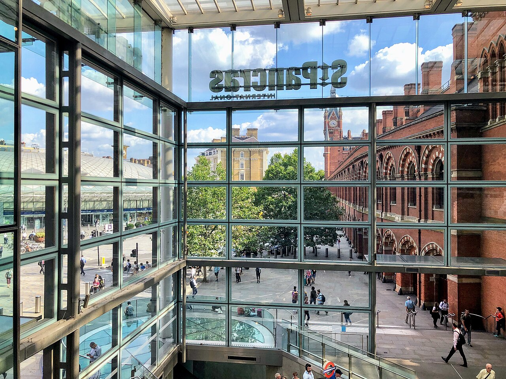</div>
    <p class="credit">Robert-brook, <a href="https://commons.wikimedia.org/wiki/File:St._Pancras_International_station.jpg">Wikimedia Commons</a>, <a href="https://creativecommons.org/licenses/by-sa/4.0">CC BY-SA 4.0</a></p>
    <figcaption><span class="fig">FIG 01 &middot; PHOTO</span><span>Our origin point for the trip.</span></figcaption>
  </figure>

  <div class="prose">
    <p>I knew we would arrive in St. Pancras International Station and stay somewhere accessible by transit.</p>
    <p>So I pulled location data for every London Underground, Overground, and National Rail station.</p>
    <p>Then I pulled data about each train line.</p>
  </div>

  <figure class="plate wide">
    <div class="frame mapwrap" data-map="assets/maps/map02-rail-network.html">
      <iframe class="live" src="assets/maps/map02-rail-network.html" loading="lazy" title="Map of London Underground and heavy rail lines and stations"></iframe>
      <div class="shield"></div>
      <div class="scrim"></div>
      <button class="mapctl" type="button" data-open>
        <svg viewBox="0 0 24 24" fill="none" stroke="currentColor" stroke-width="2" stroke-linecap="round" stroke-linejoin="round" aria-hidden="true">
          <path d="M8 3H5a2 2 0 0 0-2 2v3M16 3h3a2 2 0 0 1 2 2v3M8 21H5a2 2 0 0 1-2-2v-3M16 21h3a2 2 0 0 0 2-2v-3"/>
        </svg><span class="label">Expand map</span>
      </button>
    </div>
    <figcaption><span class="fig">FIG 02 &middot; MAP</span><span>The London heavy rail system.</span></figcaption>
  </figure>

  <div class="prose">
    <p>I found the stations that were accessible from St. Pancras within one hour, estimated by Transport for London's journey planner.</p>
    <p>Then I estimated a 10-minute walkshed around each one.</p>
    <p>To estimate a ten-minute walk, I used a straight-line, 800-meter buffer around each station &ndash; a standard shortcut I've seen while working on my master's thesis.</p>
  </div>

  <figure class="plate wide">
    <div class="frame">
      <picture class="artwork">
        <source media="(max-width: 42rem)" srcset="assets/maps/map03-station-walkshed-mobile.png" data-light-srcset="assets/maps/map03-station-walkshed-mobile.png" data-dark-srcset="assets/maps/map03-station-walkshed-mobile-dark.png">
        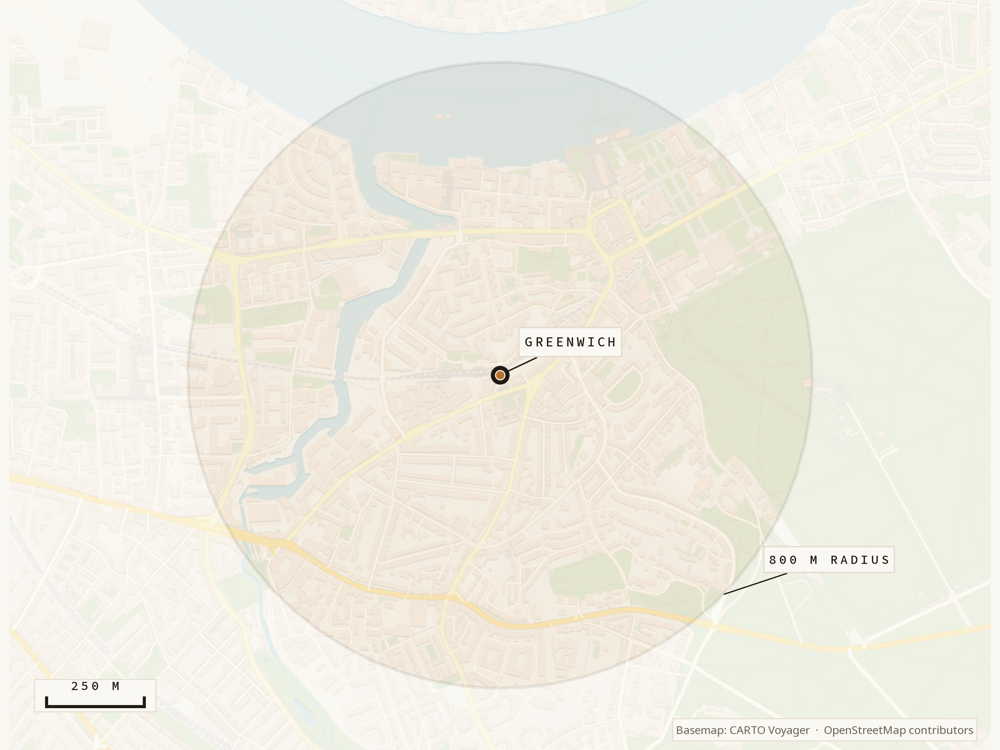
      </picture>
    </div>
    <figcaption><span class="fig">FIG 03 &middot; MAP</span><span>An example of a station walkshed.</span></figcaption>
  </figure>

  <div class="prose">
    <p>Once I had the walksheds, it was time to find hotels.</p>
    <p>I used a web scraper to get a list of hotels within the walksheds under 120 euros per night.</p>
  </div>

  <figure class="plate wide">
    <div class="frame">
      <picture class="artwork">
        <source media="(max-width: 42rem)" srcset="assets/maps/map04-walkshed-hotels-mobile.png" data-light-srcset="assets/maps/map04-walkshed-hotels-mobile.png" data-dark-srcset="assets/maps/map04-walkshed-hotels-mobile-dark.png">
        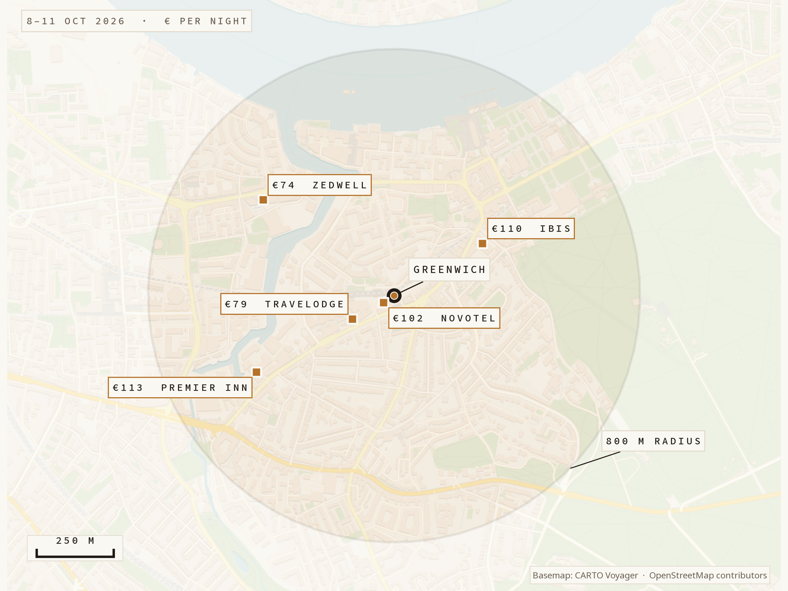
      </picture>
    </div>
    <figcaption><span class="fig">FIG 04 &middot; MAP</span><span>Hotels inside the walksheds, priced for our dates.</span></figcaption>
  </figure>

  <div class="prose">
    <p>This list was joined to a list of accommodations including geographic coordinates.</p>
    <p>Then I filtered to hotels above 60 euros per night, above a 3.8-star rating, and located within the walksheds.</p>
  </div>

  <figure class="plate wide">
    <div class="frame mapwrap" data-map="assets/maps/map05-candidate-hotels.html">
      <iframe class="live compact" src="assets/maps/map05-candidate-hotels.html" loading="lazy" title="Map of the 430 candidate hotels and the station walksheds they fall inside"></iframe>
      <div class="shield"></div>
      <div class="scrim"></div>
      <button class="mapctl" type="button" data-open>
        <svg viewBox="0 0 24 24" fill="none" stroke="currentColor" stroke-width="2" stroke-linecap="round" stroke-linejoin="round" aria-hidden="true">
          <path d="M8 3H5a2 2 0 0 0-2 2v3M16 3h3a2 2 0 0 1 2 2v3M8 21H5a2 2 0 0 1-2-2v-3M16 21h3a2 2 0 0 0 2-2v-3"/>
        </svg><span class="label">Expand map</span>
      </button>
    </div>
    <figcaption><span class="fig">FIG 05 &middot; MAP</span><span>The candidates left after the price and rating filters.</span></figcaption>
  </figure>

  <div class="prose">
    <p>This narrowed down the list to <strong>430 candidate hotels</strong>, spread across 227 stations.</p>
    <p>This was a good start, but not all of these hotels were in equal locations. Some were in boring suburbia, others in rough parts of town, and others by the airport.</p>
  </div>

  <div class="wide">
    <div class="table-wrap">
      <table class="data candidate-table">
        <thead><tr><th>Hotel</th><th>Walkshed</th><th class="n">&euro;/night</th><th class="n">Rating</th></tr></thead>
        <tbody>
          <tr><td>Premier Inn London Eltham hotel</td><td>New Eltham</td><td class="n">62</td><td class="n">4.0</td></tr>
          <tr><td>Leonardo Hotel London Croydon</td><td>Wellesley Road</td><td class="n">70</td><td class="n">4.2</td></tr>
          <tr><td>Premier Inn London Heathrow Airport Terminal 4 hotel</td><td>Heathrow Terminal 4</td><td class="n">62</td><td class="n">4.3</td></tr>
          <tr><td colspan="4" class="table-more">427 more rows&hellip;</td></tr>
        </tbody>
      </table>
    </div>
    <p class="caption">Three candidates in very different parts of London.</p>
  </div>

  <div class="prose">
    <p>Hardly a good first impression.</p>
    <p>So the next step was to analyze the quality of the area around each station.</p>
    <p>And this is where I went a little overboard.</p>
  </div>

  <div class="wide pullquote">
    <blockquote>I went a little overboard.</blockquote>
  </div>

  <div class="prose">
    <p>I started by brainstorming a list of things that make a place feel pleasant &ndash; lots of street trees, parks nearby, and cultural heritage.</p>
    <p>Then I made a list of things that make a place feel unpleasant &ndash; gray asphalt, traffic, and noise.</p>
    <p>To quantify these factors, I pulled environmental data, greenery data, architecture and infrastructure data.</p>
  </div>

  <div class="wide">
    <div class="table-wrap">
      <table class="data source-table">
        <thead><tr><th>Layer</th><th>Provider</th><th>Licence</th></tr></thead>
        <tbody>
          <tr><td>Trees</td><td>NFI 2024, Forestry Commission &middot; NTOW, Defra</td><td>OGL</td></tr>
          <tr><td>Green space and additional land cover</td><td>OSMlanduse, heiDATA</td><td>CC BY 4.0</td></tr>
          <tr><td>Building ages</td><td>EPC register, MHCLG &middot; OS OpenMap Local, Ordnance Survey</td><td>OGL &middot; OS OpenData</td></tr>
          <tr><td>Listed buildings</td><td>Historic England</td><td>OGL</td></tr>
          <tr><td>Registered parks &amp; gardens</td><td>Historic England</td><td>OGL</td></tr>
          <tr><td>Roads &amp; parking</td><td>OpenStreetMap</td><td>ODbL 1.0</td></tr>
          <tr><td>Road noise (Lden)</td><td>Defra / Environment Agency</td><td>OGL</td></tr>
          <tr><td>Scenicness ratings</td><td>Seresinhe, Preis &amp; Moat 2017</td><td>CC BY-SA 2.0</td></tr>
        </tbody>
      </table>
    </div>
    <p class="caption">Every layer, its provider, and its licence.</p>
  </div>

  <div class="prose">
    <p>I clipped each data layer to every walkshed and measured how much of the station area was covered by trees and open green space.</p>
    <p>Then I counted how many nationally designated historic structures fell inside each walkshed.</p>
  </div>

  <figure class="plate wide">
    <div class="frame">
      <picture class="artwork">
        <source media="(max-width: 42rem)" srcset="assets/maps/map06-pleasant-attributes-mobile.png" data-light-srcset="assets/maps/map06-pleasant-attributes-mobile.png" data-dark-srcset="assets/maps/map06-pleasant-attributes-mobile-dark.png">
        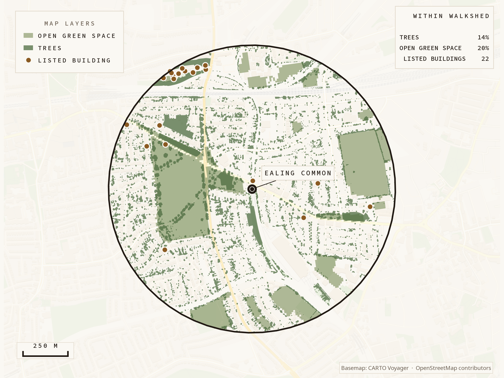
      </picture>
    </div>
    <figcaption><span class="fig">FIG 06 &middot; MAP</span><span>What makes a place feel pleasant, at Ealing Common.</span></figcaption>
  </figure>

  <div class="prose">
    <p>Then I estimated road widths and combined streets and parking lots into one measure of land taken up by asphalt.</p>
    <p>The noise data was a grid of 10-meter cells, so I counted the share of cells at or above 55 decibels.</p>
  </div>

  <figure class="plate wide">
    <div class="frame">
      <picture class="artwork">
        <source media="(max-width: 42rem)" srcset="assets/maps/map07-unpleasant-attributes-mobile.png" data-light-srcset="assets/maps/map07-unpleasant-attributes-mobile.png" data-dark-srcset="assets/maps/map07-unpleasant-attributes-mobile-dark.png">
        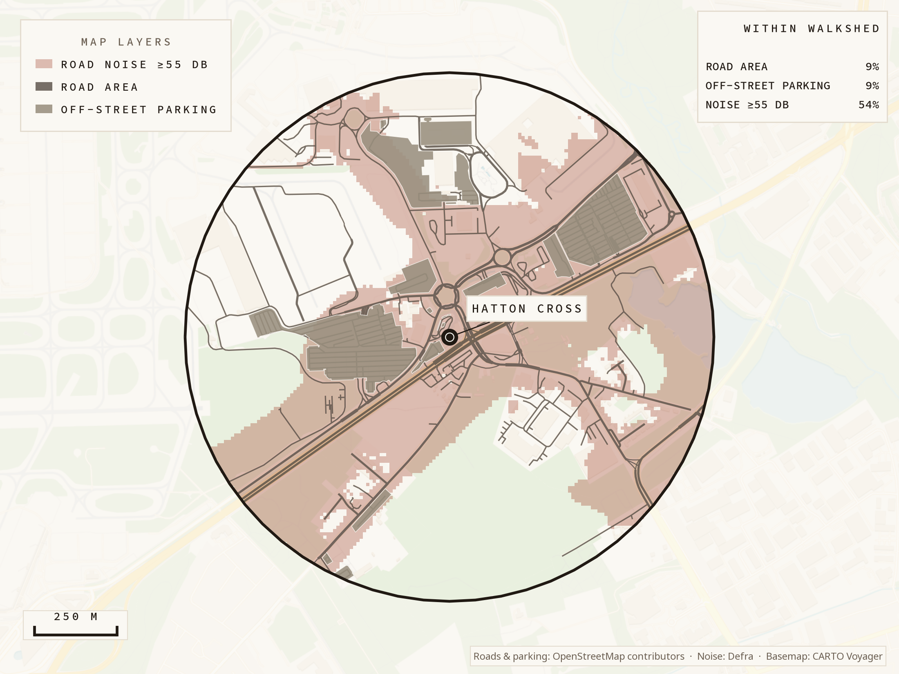
      </picture>
    </div>
    <figcaption><span class="fig">FIG 07 &middot; MAP</span><span>And what makes it feel unpleasant, at Hatton Cross.</span></figcaption>
  </figure>

  <div class="prose">
    <p>Now I had a bunch of numbers for each walkshed, but I didn't know how to weigh them.</p>
    <p>More trees is probably good &ndash; but how much does noise matter? What about asphalt?</p>
    <p>Luckily, I found an empirical way to check.</p>
    <p><em>Scenic-Or-Not</em> is a website where visitors rate photos of places across Britain on how attractive they look &ndash; over 200,000 photos, each rated by at least three people.</p>
  </div>

  <figure class="plate wide">
    <div class="frame">
      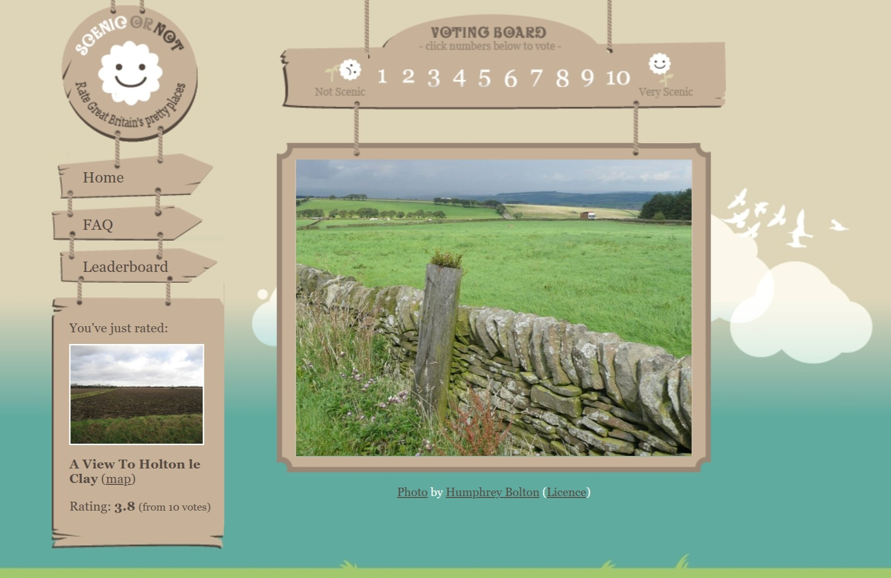
    </div>
    <p class="credit"><em>Scenic-Or-Not</em>, Data Science Lab, Warwick Business School</p>
    <figcaption><span class="fig">FIG 08 &middot; SCREENSHOT</span><span>The <em>Scenic-Or-Not</em> game lets users rate photos from Not Scenic (1) to Very Scenic (10).</span></figcaption>
  </figure>

  <div class="prose">
    <p>In 2017, a research group at the University of Warwick trained a machine learning model on the <em>Scenic-Or-Not</em> ratings and used it to predict scenic ratings for thousands of geolocated photos in London.</p>
    <p>I matched their predicted scenic ratings to my walksheds and tested which of my metrics tracked them.</p>
    <p>Several metrics showed statistically meaningful correlation across all 264 walksheds. For example, tree cover and open green space predicted higher scenic ratings. Noise and asphalt predicted lower scenic ratings.</p>
  </div>

  <div class="plot-grid wide">
    <figure class="plate plot-panel">
      <div class="frame"><picture class="artwork">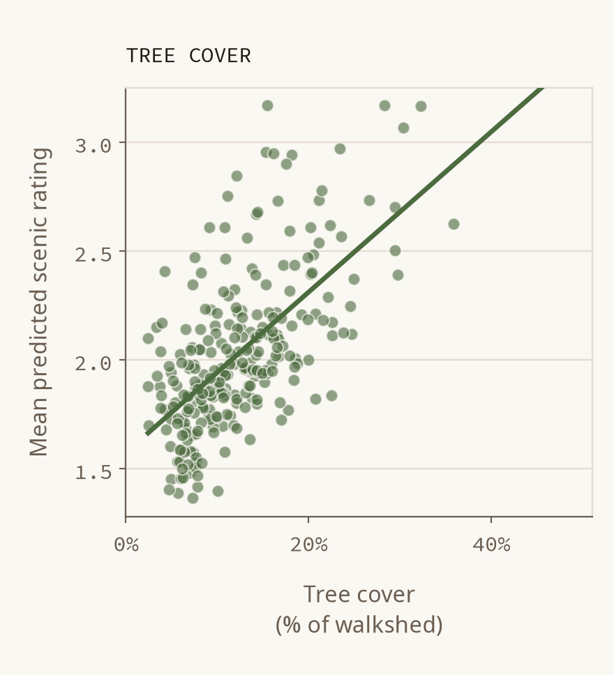</picture></div>
      <figcaption><span class="fig">FIG 09A &middot; CHART</span><span>Tree cover has the clearest relationship: walksheds with more trees tend to receive higher predicted scenic ratings.</span></figcaption>
    </figure>
    <figure class="plate plot-panel">
      <div class="frame"><picture class="artwork">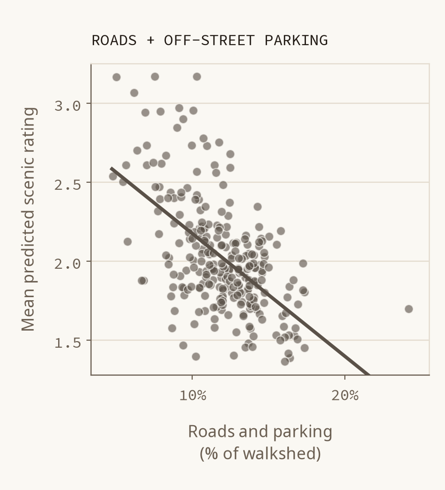</picture></div>
      <figcaption><span class="fig">FIG 09B &middot; CHART</span><span>Walksheds given over to roads and off-street parking tend to receive lower predicted scenic ratings.</span></figcaption>
    </figure>
    <figure class="plate plot-panel">
      <div class="frame"><picture class="artwork">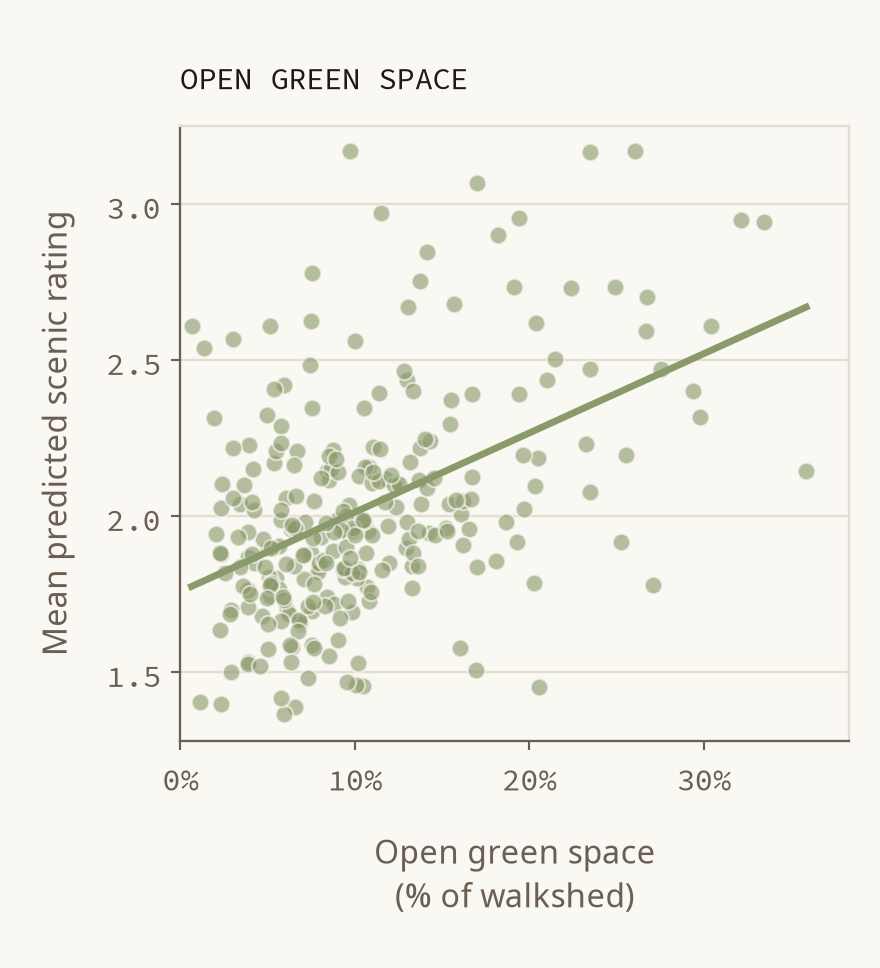</picture></div>
      <figcaption><span class="fig">FIG 09C &middot; CHART</span><span>Open green space predicts higher scenic ratings, though less clearly than tree cover.</span></figcaption>
    </figure>
    <figure class="plate plot-panel">
      <div class="frame"><picture class="artwork">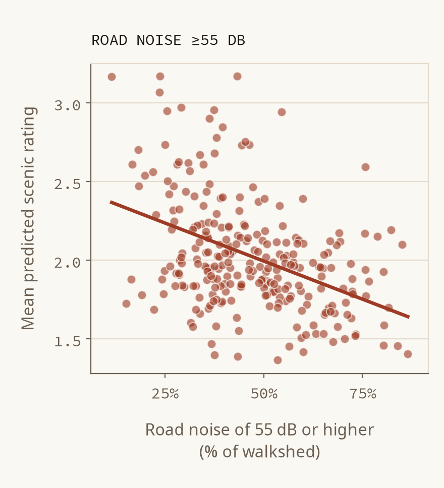</picture></div>
      <figcaption><span class="fig">FIG 09D &middot; CHART</span><span>Greater exposure to road noise predicts lower scenic ratings, with considerable variation among walksheds.</span></figcaption>
    </figure>
  </div>

  <div class="prose">
    <p>I combined these and multiple other factors into a scenic score for each walkshed.</p>
    <p>Then I compared my model to the one produced by the research group based on the average Scenic-Or-Not ranking inside each walkshed.</p>
  </div>

  <figure class="plate wide plate--capped">
    <div class="frame">
      <picture class="artwork">
        <source media="(max-width: 42rem)" srcset="assets/graphs/plot10-scenic-agreement-mobile.png" data-light-srcset="assets/graphs/plot10-scenic-agreement-mobile.png" data-dark-srcset="assets/graphs/plot10-scenic-agreement-mobile-dark.png">
        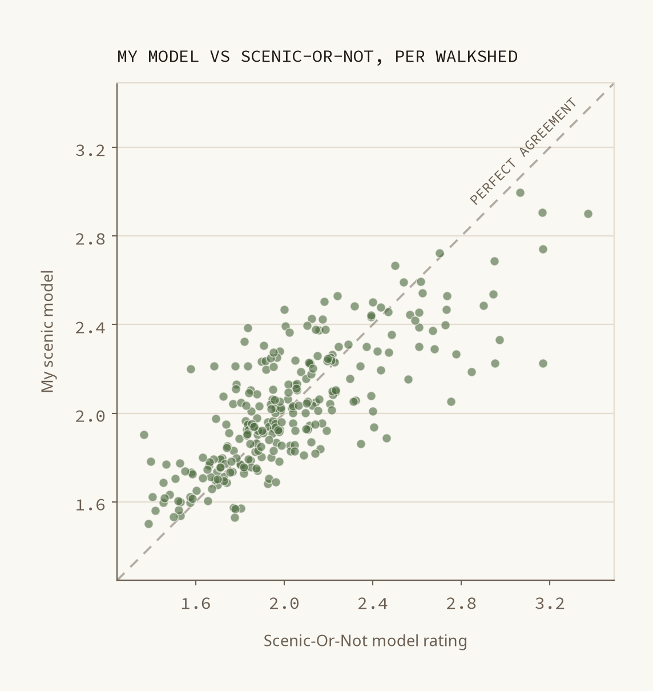
      </picture>
    </div>
    <figcaption><span class="fig">FIG 10 &middot; CHART</span><span>My score and the <em>Scenic-Or-Not</em> ratings mostly agree.</span></figcaption>
  </figure>

  <div class="prose">
    <p>But the <em>Scenic-Or-Not</em> model did not show any correlation with something I consider important: architectural built heritage.</p>
  </div>

  <figure class="plate wide plate--capped">
    <div class="frame">
      <picture class="artwork">
        <source media="(max-width: 42rem)" srcset="assets/graphs/plot11a-listed-buildings-mobile.png" data-light-srcset="assets/graphs/plot11a-listed-buildings-mobile.png" data-dark-srcset="assets/graphs/plot11a-listed-buildings-mobile-dark.png">
        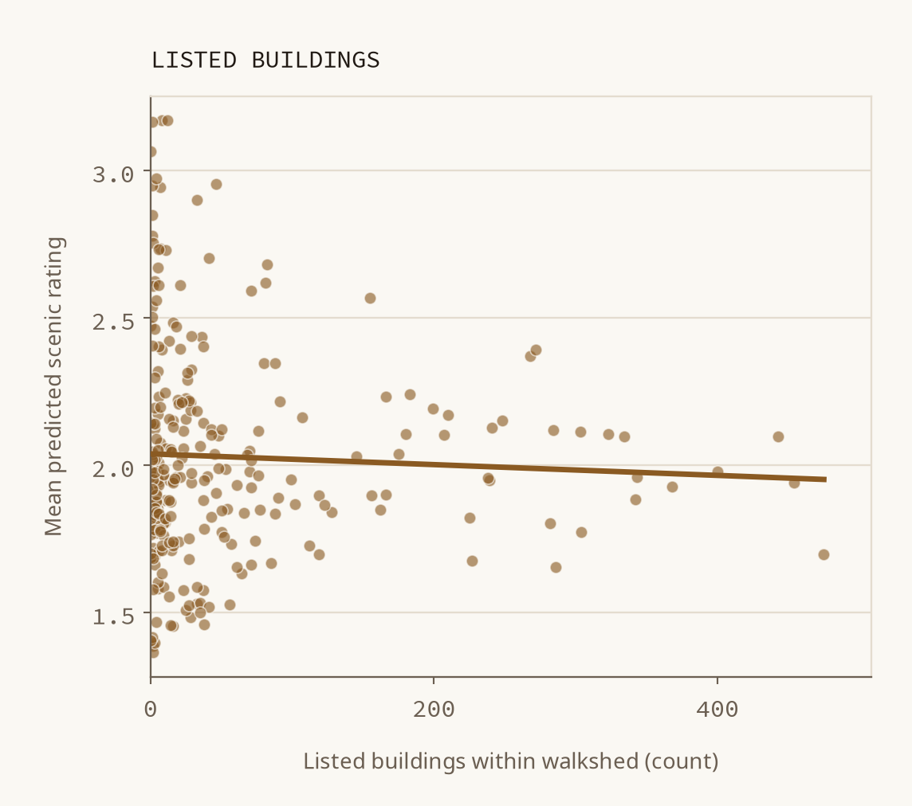
      </picture>
    </div>
    <figcaption><span class="fig">FIG 11 &middot; CHART</span><span>The number of listed buildings has essentially no relationship with predicted scenic ratings.</span></figcaption>
  </figure>

  <div class="prose">
    <p>So I kept listed structures as a separate heritage score for architectural character.</p>
    <p>I now had two scores for each walkshed: scenic and built heritage.</p>
    <p>I played with various weights to see what happened if I favored heritage more or if I filtered to those within a kilometer of a listed park, garden, or cemetery.</p>
  </div>

  <figure class="plate wide">
    <div class="frame mapwrap" data-map="assets/graphs/plot12-walkshed-scores.html">
      <iframe class="live compact" src="assets/graphs/plot12-walkshed-scores.html" loading="lazy" title="Interactive scatterplot of the walksheds by scenic and heritage score"></iframe>
      <div class="shield"></div>
      <div class="scrim"></div>
      <button class="mapctl" type="button" data-open>
        <svg viewBox="0 0 24 24" fill="none" stroke="currentColor" stroke-width="2" stroke-linecap="round" stroke-linejoin="round" aria-hidden="true">
          <path d="M8 3H5a2 2 0 0 0-2 2v3M16 3h3a2 2 0 0 1 2 2v3M8 21H5a2 2 0 0 1-2-2v-3M16 21h3a2 2 0 0 0 2-2v-3"/>
        </svg><span class="label">Expand plot</span>
      </button>
    </div>
    <figcaption><span class="fig">FIG 12 &middot; CHART</span><span>Adjust the dials to see how the walkshed ratings change.</span></figcaption>
  </figure>

  <div class="prose">
    <p>I tuned the dials to something that I found appealing. In my opinion, the best candidates clustered around two places in London.</p>
    <p>The neighborhoods around Kensington Gardens &ndash; Queensway, Holland Park, Bayswater, and Notting Hill Gate &ndash; hold some of London's celebrated Georgian townhouses.</p>
    <p>The area is accessible to transit and amenities with many hotels.</p>
  </div>

  <figure class="plate wide">
    <div class="frame">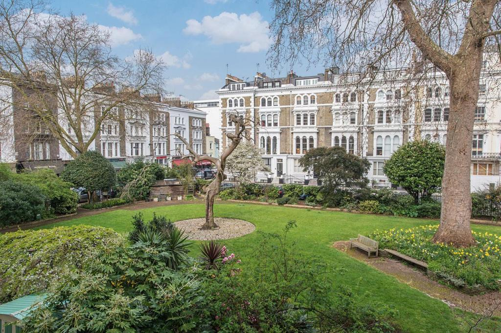</div>
    <p class="credit">Leinstersquare, <a href="https://commons.wikimedia.org/wiki/File:Leinster_Square_Gardens.jpg">Wikimedia Commons</a>, <a href="https://creativecommons.org/licenses/by-sa/4.0">CC BY-SA 4.0</a></p>
    <figcaption><span class="fig">FIG 13 &middot; PHOTO</span><span>Georgian terraced houses near Kensington Gardens.</span></figcaption>
  </figure>

  <div class="prose">
    <p>And the others clustered around Greenwich Park: Greenwich, Cutty Sark, and Blackheath.</p>
  </div>

  <figure class="plate wide">
    <div class="frame">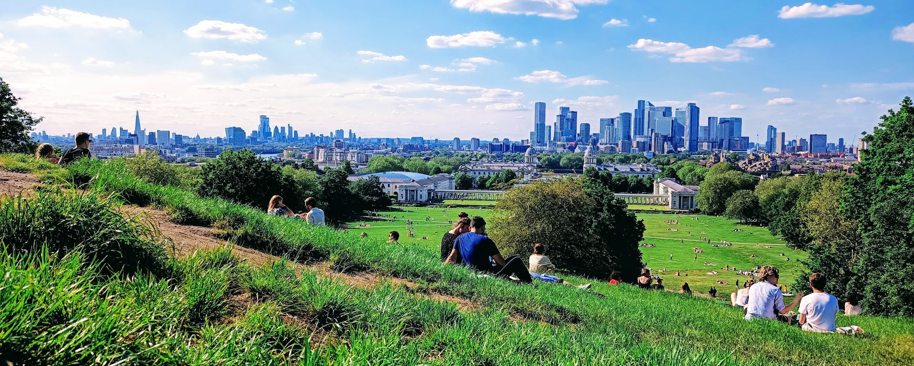</div>
    <p class="credit">Farbades420, <a href="https://commons.wikimedia.org/wiki/File:London_Skyline_2021.jpg">Wikimedia Commons</a>, <a href="https://creativecommons.org/publicdomain/zero/1.0/">CC0 1.0</a></p>
    <figcaption><span class="fig">FIG 14 &middot; PHOTO</span><span>View of the London skyline from Greenwich Park.</span></figcaption>
  </figure>

  <div class="prose">
    <p>From among the available hotels in both areas, we chose one in Blackheath: The Clarendon Hotel.</p>
  </div>

  <figure class="plate wide">
    <div class="frame">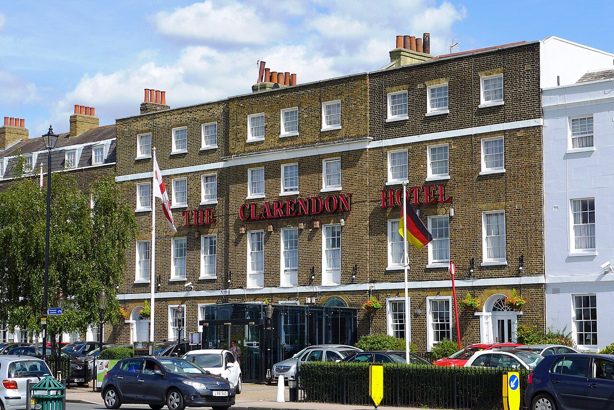</div>
    <p class="credit">Ewan-M, <a href="https://commons.wikimedia.org/wiki/File:Clarendon_Hotel,_Blackheath,_SE3.jpg">Wikimedia Commons</a>, <a href="https://creativecommons.org/licenses/by-sa/2.0">CC BY-SA 2.0</a></p>
    <figcaption><span class="fig">FIG 15 &middot; PHOTO</span><span>The Clarendon Hotel.</span></figcaption>
  </figure>

  <div class="prose">
    <p>It's accessible in about 40 minutes by train from St. Pancras station, close to a charming village high street, the Royal Observatory in Greenwich, plus several museums, parks, and scenic lookout points.</p>
    <p>And as a bonus for a geographer, it's only 1.28 km from the official Prime Meridian marker.</p>
  </div>

  <figure class="plate wide">
    <div class="frame">
      <picture class="artwork">
        <source media="(max-width: 42rem)" srcset="assets/maps/map16-clarendon-prime-meridian-ruler-mobile.png" data-light-srcset="assets/maps/map16-clarendon-prime-meridian-ruler-mobile.png" data-dark-srcset="assets/maps/map16-clarendon-prime-meridian-ruler-mobile-dark.png">
        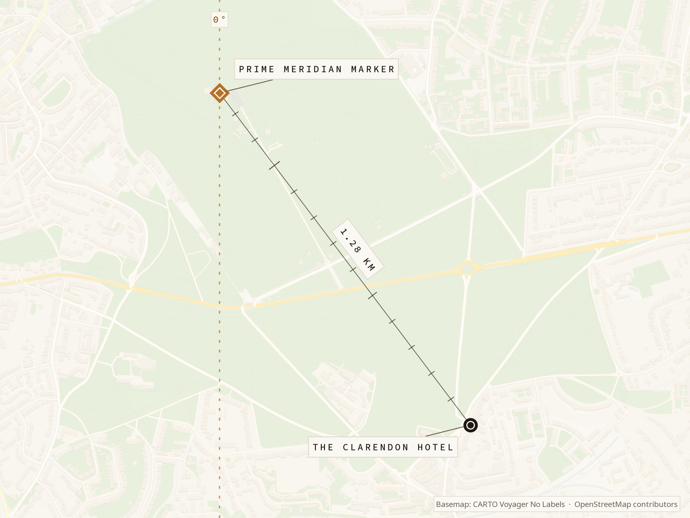
      </picture>
    </div>
    <figcaption><span class="fig">FIG 16 &middot; MAP</span><span>A short walk from the official 0&deg; longitude point.</span></figcaption>
  </figure>

  <div class="prose">
    <p class="closer">Sold.</p>
  </div>

  <footer class="prose" style="border-top:var(--rule) solid var(--ink);padding-top:var(--s2)">
    <p class="label">P.R. Truesdell</p>
  </footer>

</main>

<script>
/* Live maps: invitation, then overlay.
   ------------------------------------
   The plate is inert on touch (see .shield) and live on a mouse. Exploration
   happens in a full-viewport overlay, which owns the gesture space outright and
   so needs no modifier keys, no two-finger rules and no scroll arbitration.

   The invitation fires ONCE per page, on the first map only. Repeating it after
   the reader has learnt the affordance is noise, and NN/g's aesthetic-and-
   minimalist heuristic is the reason it self-retires rather than nagging. */
(function () {
  var wraps = [].slice.call(document.querySelectorAll('.mapwrap'));
  if (!wraps.length) { return; }
  var coarse = matchMedia('(pointer: coarse)').matches;
  var invited = false;
  var overlay = null, restoreFocus = null;

  var EXPAND = 'M8 3H5a2 2 0 0 0-2 2v3M16 3h3a2 2 0 0 1 2 2v3' +
               'M8 21H5a2 2 0 0 1-2-2v-3M16 21h3a2 2 0 0 0 2-2v-3';
  /* The inverse glyph, arrows pointing IN. Same corner, same control -- it does
     not become an x, because the map is not being dismissed, it is being put
     back to its inline size. */
  var COLLAPSE = 'M3 8h3a2 2 0 0 0 2-2V3M21 8h-3a2 2 0 0 1-2-2V3' +
                 'M3 16h3a2 2 0 0 1 2 2v3M21 16h-3a2 2 0 0 0-2 2v3';

  function invite(wrap) {
    /* Skipped on a mouse: dimming a map the reader can already hover and zoom
       reads as a blocker, not an offer. The corner control is enough there. */
    if (invited || coarse === false) { return; }
    invited = true;
    wrap.classList.add('inviting');
    setTimeout(function () { wrap.classList.remove('inviting'); }, 2600);
  }

  function open(wrap) {
    if (overlay) { return; }
    restoreFocus = document.activeElement;
    wrap.classList.remove('inviting');
    overlay = document.createElement('div');
    overlay.className = 'mapoverlay';
    overlay.setAttribute('role', 'dialog');
    overlay.setAttribute('aria-modal', 'true');
    /* Both names come from the inline iframe's own title, so a second map on
       the page cannot be announced as the first one. */
    var title = wrap.querySelector('iframe').title;
    overlay.setAttribute('aria-label', title + ', full screen');

    var frame = document.createElement('iframe');
    /* open=origin makes the map open one label on arrival &mdash; St Pancras on
       FIG 02, the candidate nearest it on FIG 05. Show the interaction's OUTPUT
       instead of describing it. The reader's first tap dismisses it, and a tap
       that lands on another feature opens that one in the same gesture. */
    /* The overlay copy is built fresh, so it can be handed the theme in its
       URL and come up correct on the first paint rather than flashing the OS
       theme and then being corrected by a message. The inline copies, which
       are never reloaded, get the postMessage path in the theme script below. */
    var t = document.documentElement.getAttribute('data-theme')
            || (matchMedia('(prefers-color-scheme: dark)').matches ? 'dark' : 'light');
    frame.src = wrap.dataset.map + '?open=origin&theme=' + t;
    frame.title = title;
    overlay.appendChild(frame);

    var btn = document.createElement('button');
    btn.type = 'button';
    btn.className = 'mapctl';
    btn.innerHTML = '<svg viewBox="0 0 24 24" fill="none" stroke="currentColor" ' +
      'stroke-width="2" stroke-linecap="round" stroke-linejoin="round" aria-hidden="true">' +
      '<path d="' + COLLAPSE + '"/></svg><span class="label">Close</span>';
    btn.addEventListener('click', close);
    overlay.appendChild(btn);

    document.body.appendChild(overlay);
    document.body.classList.add('mapopen');
    btn.focus();
  }

  function close() {
    if (!overlay) { return; }
    overlay.remove();
    overlay = null;
    document.body.classList.remove('mapopen');
    /* User control and freedom: focus goes back where it came from, so the
       reader resumes at the figure rather than at the top of the document. */
    if (restoreFocus && restoreFocus.focus) { restoreFocus.focus(); }
  }

  document.addEventListener('keydown', function (e) {
    if (e.key === 'Escape') { close(); }
  });

  wraps.forEach(function (wrap) {
    wrap.querySelector('[data-open]').addEventListener('click', function () {
      open(wrap);
    });
    /* Three ways in, matching how each input actually arrives at a figure:
       a cursor enters it, a finger swipes across it, or it scrolls into view. */
    wrap.addEventListener('mouseenter', function () { invite(wrap); });
    wrap.addEventListener('touchstart', function () { invite(wrap); }, {passive: true});
  });

  /* Scroll-in-progress flag. 220 ms of quiet ends the gesture -- long enough to
     bridge the gaps inside one flick of a wheel, short enough that stopping to
     look at the map hands it back almost immediately. */
  var quiet;
  addEventListener('wheel', function () {
    document.body.classList.add('scrolling');
    clearTimeout(quiet);
    quiet = setTimeout(function () {
      document.body.classList.remove('scrolling');
    }, 220);
  }, {passive: true, capture: true});

  if ('IntersectionObserver' in window) {
    var io = new IntersectionObserver(function (entries) {
      entries.forEach(function (en) {
        if (en.isIntersecting) { invite(en.target); io.unobserve(en.target); }
      });
    }, {threshold: 0.6});
    io.observe(wraps[0]);
  }
})();
</script>

<script>
/* theme toggle &mdash; conventional sun/moon label showing the mode you'll switch TO.
   Remembers the viewer's choice, fails quietly if storage is blocked. */
(function () {
  var root = document.documentElement, btn = document.getElementById('themeToggle');
  function isDark() {
    var t = root.getAttribute('data-theme');
    if (t) return t === 'dark';
    return matchMedia('(prefers-color-scheme: dark)').matches;
  }
  function sync() {
    var dark = isDark();
    btn.textContent = dark ? String.fromCharCode(0x2600) + ' Light mode' : String.fromCharCode(0x263E) + ' Dark mode';
    btn.setAttribute('aria-label', dark ? 'Switch to light mode' : 'Switch to dark mode');
    var key = dark ? 'dark' : 'light';
    document.querySelectorAll('[data-light-src]').forEach(function (image) {
      image.src = image.dataset[key + 'Src'];
    });
    document.querySelectorAll('[data-light-srcset]').forEach(function (source) {
      source.srcset = source.dataset[key + 'Srcset'];
    });
    /* The live plates are iframes, so they have their OWN documentElement and
       never saw this attribute -- FIG 12 carries a full set of light and dark
       tokens and was following the OS preference alone, which made the toggle
       look like it had no light mode at all. Tell them.

       postMessage rather than reaching into contentDocument: same-origin DOM
       access throws for file:// iframes in Chrome, and this page is opened
       that way as often as it is served. A frame that does not listen simply
       ignores it. */
    document.querySelectorAll('iframe').forEach(function (frame) {
      try {
        frame.contentWindow.postMessage({type: 'wsk-theme', theme: key}, '*');
      } catch (e) {}
    });
  }
  /* An iframe that is still loading when the reader toggles would come up in
     the old theme, so each one is told again as it finishes. `loading="lazy"`
     makes that the common case, not the edge one. */
  document.querySelectorAll('iframe').forEach(function (frame) {
    frame.addEventListener('load', sync);
  });
  try { var saved = localStorage.getItem('wsk-theme'); if (saved) root.setAttribute('data-theme', saved); } catch (e) {}
  sync();
  matchMedia('(prefers-color-scheme: dark)').addEventListener('change', sync);
  btn.addEventListener('click', function () {
    var next = isDark() ? 'light' : 'dark';
    root.setAttribute('data-theme', next);
    try { localStorage.setItem('wsk-theme', next); } catch (e) {}
    sync();
  });
})();
</script>
